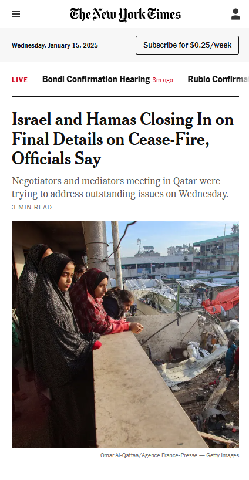
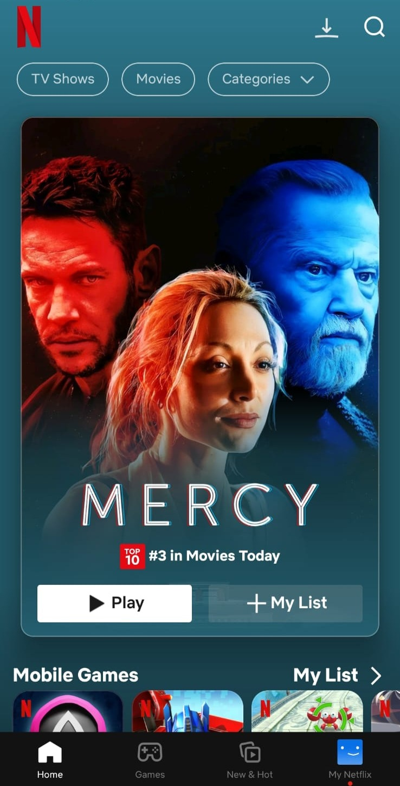
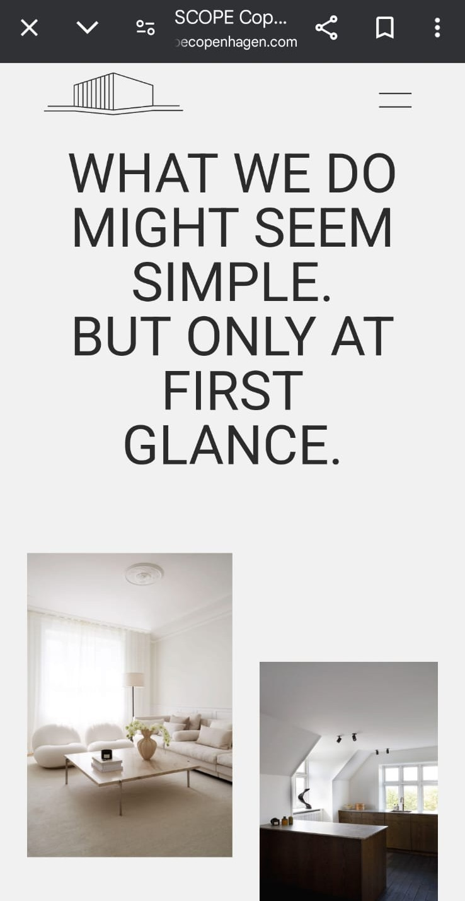

Visual Hierarchy
The New York Times
The New York Times homepage has a defined visual hierarchy that draws the readers to the printed information. This emulates the printed version of the newspaper, but in a more dynamic way. It includes:
- Top Navigation/Masthead - The user can choose the top content they want to view, (e.g., "News," "Sports.")
- Hero Section - This displays a large image or video along with a headline to a top story.
- Other Headlines - Diverse stories which can sometimes be accompanied by images.
- Article Summaries - Brief summaries that accompany the headlines.
- Section Headings - Identifiable headings, (e.g., "U.S.," "World," "Business") in distinct fonts or colors.
- Color and Contrast - With a conservative color palette, mainly black, gray, and white.
- Whitespace - Functioning use of both whitespace and negative whitespace to separate different elements.
- Font Size and Weight - Different sizes and weights of fonts are used to create hierarchy.
Fitt's Law
Netflix
Fitts's Law, as it relates to computers, distinctly says people will move faster and more easily through a webpage when the target is bigger and closer. An example would be a button strategically placed on a webpage. Netflix's homepage is an excellent example of this principle in several ways. Netflix employs:
- Large, Clickable Thumbnails: The primary way users interact with Netflix is by clicking on the movie or show thumbnails. These thumbnails are relatively big, which reduces the time it takes to make a sellection.
- Prominent Play Buttons: When a user hovers over a thumbnail, the play button appears. This button is large and prominently located on the thumbnail itself.
- Row-Based Layout: The movies are organized by horizontal rows of thumbnails. This layout minimizes distance. In the end, it makes it easier to choose content.
- "Next" and "Previous" Buttons: To navigate through rows of content, Netflix provides "Next" and "Previous" buttons. These are large and placed at the edges of the screen.
- Focus on Hover: When you hover over a movie/show, more information and options (like "Add to My List") appear.
Whitespace and Clean Design
Scope Copenhagen
Scope Copenhagen's website is an excellent example utilizing whitespace and clean design to give the user an elegant create an elegant adventure. The website itself demonstrates Scandinavian aesthetics with “Minimalism." Listed below are specific ways they achieve their goal:
- Ample Use of Whitespace Every section, including "Projects," "About Scope," and "Contact," is surrounded by generous negative space.
- Neutral Color Palette: A consistent use of subtle tones and neutral colors adds to a calming, sophisticated look that avoids visual clutter.
- Clear Visual Hierarchy: Typography choices and spacing are carefully designed to lead the user comfortably through the site.
- Minimalist Navigation Menu: The navigation menu is clean and simple, prioritizing usability and efficiency.
- High-Quality Imagery: Large images are integrated with whitespace to provide visual impact without overwhelming the user.